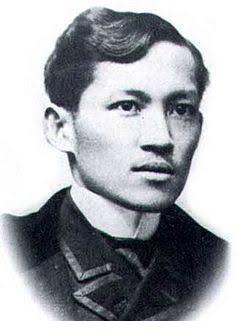
1861
Who Was Rizal
José Rizal was born in 1861 in Calamba, in a Philippines still governed almost entirely through the Spanish colonial church. A physician by training, a novelist by consequence, he spent years studying in Europe — where distance let him see his home country with new clarity. What he saw became two novels that Spain would eventually call the most dangerous documents in the archipelago.
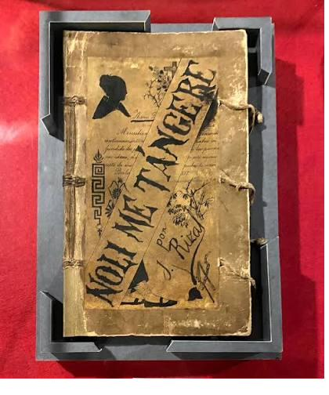
1887
Noli Me Tangere
Published in 1887, Noli Me Tangere ("Touch Me Not") followed Crisóstomo Ibarra's return home to a town quietly ruled by its friars. Through Ibarra's homecoming, Rizal exposed clerical abuse, corruption, and a colonial system that punished truth-telling as rebellion. The book was banned outright in the Philippines — which, naturally, made everyone want to read it.
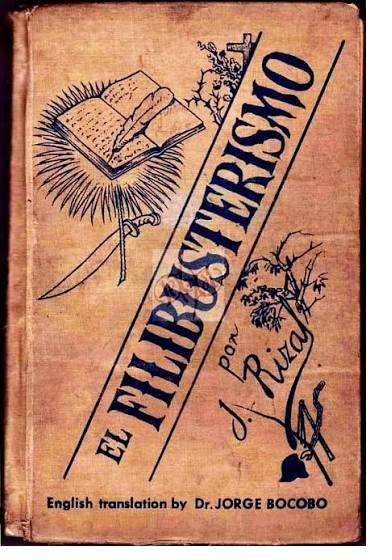
1891
El Filibusterismo
The 1891 sequel is darker and angrier. Years later, a disguised Ibarra returns not to reform the system but to burn it down. Where Noli diagnosed the disease, El Filibusterismo asks what happens when patience runs out — a question Rizal himself was living out in real time.
Church & Colony
The Frailocracy: Church Power in the Colony
Under Spanish rule, friars weren't just clergy — they were often the most powerful men in town, controlling land, schooling, even who could marry whom. Rizal's novels take direct aim at this arrangement: men who preached humility while wielding near-total authority, and who policed the morality of others while hiding their own. This wasn't subtext — it's the engine of the plot in both books.
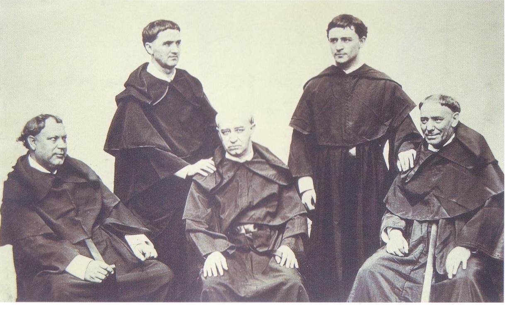
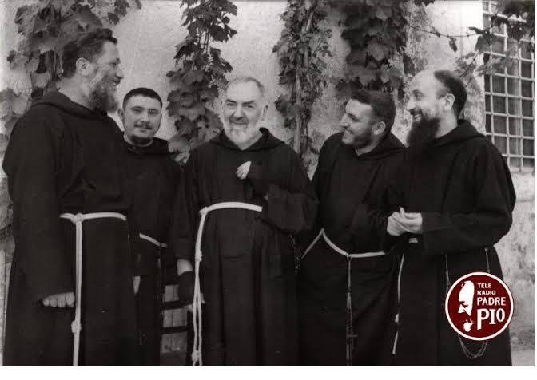
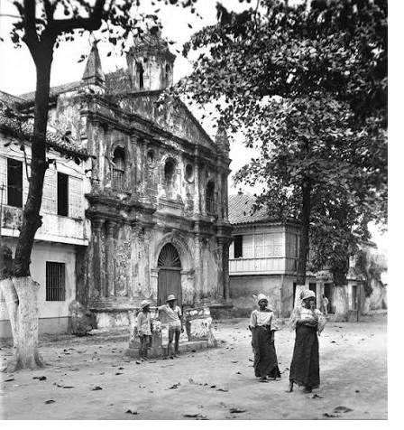
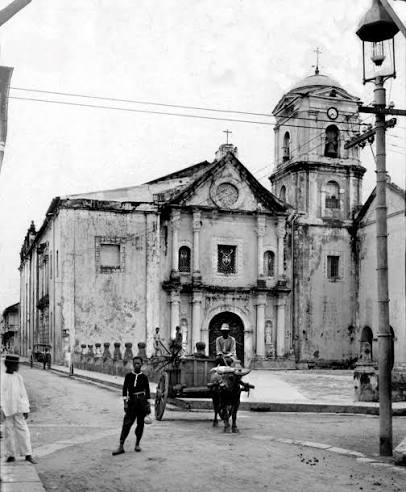
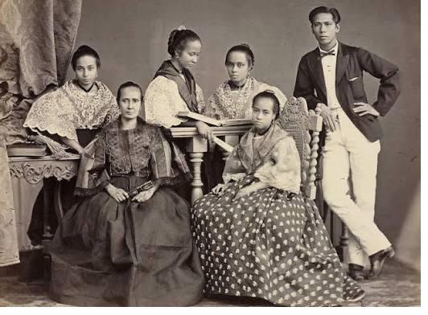
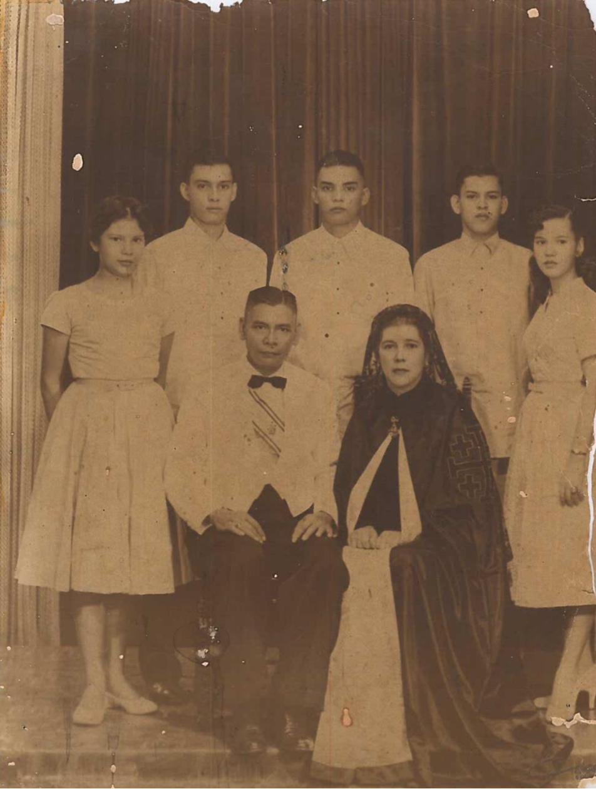
Society
Filipino Family & Society
Rizal's Philippines was a layered society — Spanish friars and officials at the top, a rising educated mestizo class in the middle (Rizal's own background), and everyone else beneath both. Family life, arranged marriages, and social standing all moved through this hierarchy. Understanding it is essential to understanding why a character like Maria Clara had so little room to make her own choices.
Symbol and Constraint
Maria Clara
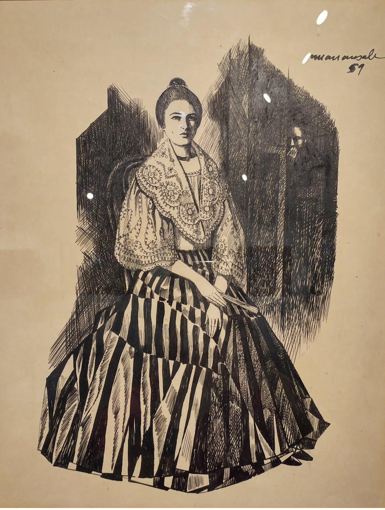
Maria Clara is Ibarra's beloved and Captain Tiago's daughter — devout, modest, and, by the standards of her time, the ideal Filipina. But Rizal complicates that ideal almost immediately: she's later revealed to be the secret daughter of Padre Dámaso, born of an affair the friar had with her mother while she was married to another man. The friar who publicly enforces purity on everyone else quietly broke it himself.
Throughout the novel, decisions about Maria Clara's life are made almost entirely by others — her father, Dámaso, the Church — while she has strikingly little say in any of it. Many readers see her as a stand-in for the Philippines itself: beautiful, devout, and ultimately confined by the very institutions claiming to protect her. Not everyone agrees this portrayal critiques that ideal rather than reinforcing it — a tension worth sitting with, not resolving neatly.
Her arc ends with her entering a convent rather than marrying a man chosen for her — a "choice" that is barely a choice at all. In the sequel, it's revealed she died there, with strong implications of abuse by the friars meant to be her caretakers.
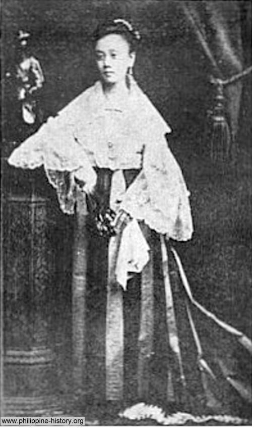
An Interactive Moment
One Day — Walk Through Maria Clara's Last Free Day
Live one day in her place, from dawn to convent gate. Every choice changes the words along the way. None of them change where you end up.
Today
Legacy & Modern Echoes
Maria Clara's story isn't just historical. The "ideal woman" standard she represents still gets invoked today — sometimes literally, in phrases like "huwag kang Maria Clara." Questions about Church influence over personal life (divorce, reproductive health, sex education) remain live debates in the Philippines more than a century later. Rizal wrote about his own time, but the questions he raised didn't stay there.
1896
Martyrdom & Reflection
Rizal was executed in 1896, at 35, for writings that told the Philippines the truth about itself. He didn't live to see independence — but he gave the country the words to imagine it.